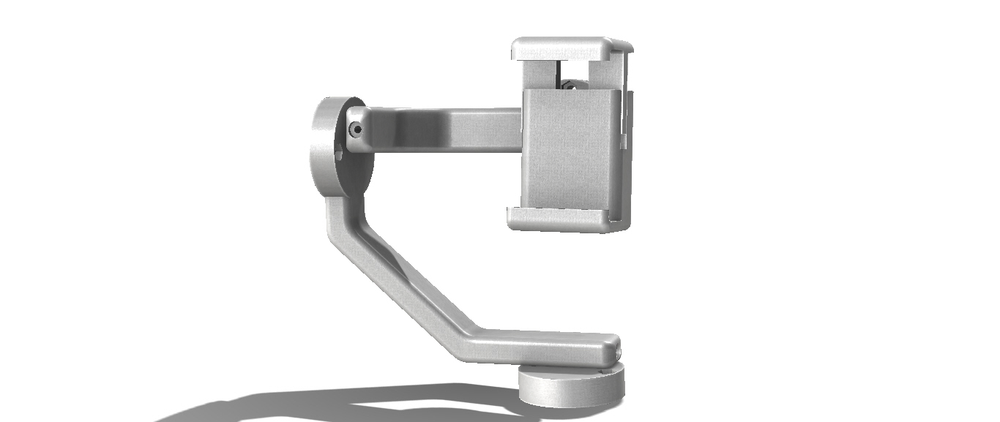
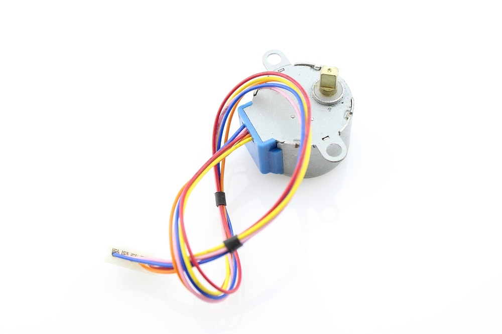
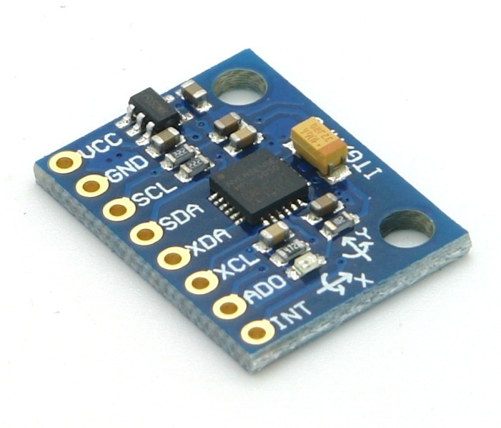
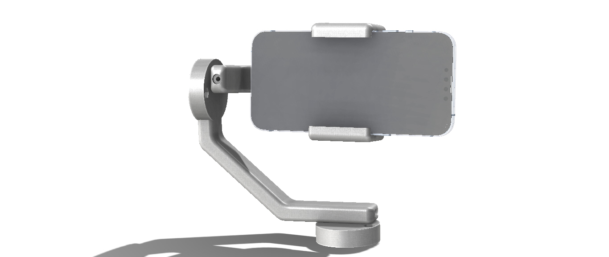

Motorized Gimbal
Description
A motorized gimbal that operates using steppers rather than brushless DC motors. A motorized gimbal can achieve a more stable shot than one lacking the motors. Moreover, it can manipulate the phone’s orientation without the need for any manual adjustments.
Objective
To design a motorized phone gimbal with 5V stepper motors that provide precise stabilization for captured shots.
Tasks
- Orienting the motors to be able to support the axial weights.
- Syncing the sensors and the actuators.
- Programming the mechanism.
- Orienting the motors to be able to support the axial weights
-
The motors that were used in this project were the 5V DC motors that can provide 34 N.mm of torque. However, these motors do not support high torque. Therefore, it was necessary that the load should act axially on the motors to be able to handle the highest possible torque. The final design focused mainly on this objective and was tested and proven efficient.
- Syncing the sensors and the actuators
-
A stepper motor uses steps in order to perform the necessary output. However, when using a sensor such as the MPU-6000, which provides more precise measurements, it is necessary that both the measurement and the output of the actuator are in sync. Therefore, the sensors’ values were rounded to properly coordinate with the stepper motor.
 - Programming the mechanism
-
Although most of the programming needed for this mechanism is simple and can be collected through several sources on the internet, integrating it to be interactive and operate as a single program posed a challenge. In addition, all the motors had to operate simultaneously in order to perform smooth transitions. In order to have the desired outcome, several factors had to be kept in mind. Firstly, which motor needs to be engaged and in which direction at a given position had to be established. This has been tackled by assigning each parameter X, Y, and Z to a specific motor so that it operates according to the change in the assigned parameter. Secondly, an upper and lower boundary had to be established in order to avoid the frequent and unnecessary agitation caused when the change is minute. Lastly, the values of the boundaries had to be determined and set in an acceptable manner. This provides an efficient operation of the gimbal.
//read gyro data GyX=(Wire.read()<<8|Wire.read()) + GyXoff; GyY=(Wire.read()<<8|Wire.read()) + GyYoff; GyZ=(Wire.read()<<8|Wire.read()) + GyZoff; //get pitch/roll getAngle(AcX,AcY,AcZ); //change= pitch - pitch_previous; //change_absolute = abs(change); if (pitch > 3){ myStepper.step(32); } else if ( pitch < -3){ myStepper.step(-32); } //send the data out the serial port Serial.print("Angle: "); Serial.print("Pitch = "); Serial.print(pitch); Serial.print(" | Roll = "); Serial.println(roll); Serial.print("The previous pitch is ");Serial.print(pitch_previous); Serial.print("The change is ");Serial.println(change_absolute);
Main Components
| Name | Function |
|---|---|
| Arms | Connects the stepper motors and the phone together. |
| Phone Holder | Supports the phone. |
| Phone Holder Clamps | Fixes the phone in its place. |
Results
A gimbal is a vital tool used in the filming industry and is considered expensive if a professional one is required. Designing a gimbal that can be 3D printed has the capability of decreasing this cost tremendously. However, in this project, the motors used were considered weak and could not handle large torques, which restricted the design process. Moreover, when using an Arduino that executes a single line of programming at a time, a lag in the operation is expected. However, regarding the outcome of this project, I believe that for a low-budget 3D printable gimbal, the results are more than satisfactory.
